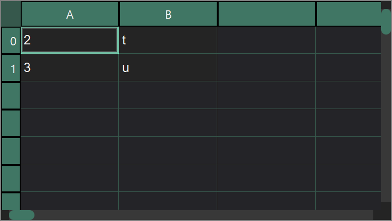
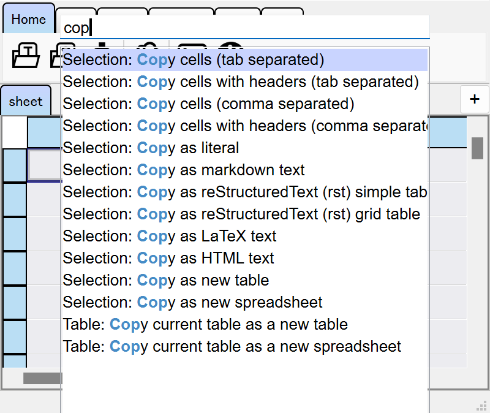

Quickstart¶
Open A Table Viewer¶
The main window of tabulous is a TableViewer instance.
from tabulous import TableViewer
viewer = TableViewer()
You can also read table data from files to create a viewer.
import tabulous as tbl
# Read a csv file and add it to the viewer, just like pd.read_csv
viewer = tbl.read_csv("path/to/data.csv")
# Read a Excel file and add all the sheets to the viewer.
viewer = tbl.read_excel("path/to/data.xlsx")
If virtual environment (such as conda) is used, you can use tabulous command to launch
a viewer.
$ tabulous # just launch a viewer
$ tabulous ./path/to/data.csv # open a table file in the viewer
Open an Interpreter¶
tabulous viewer has an embedded Python interpreter console. It is not visible by default
but you can show it in several ways.
Set
visibleproperty ofconsoleinterface toTrue:>>> viewer.conosole.visible = TrueActivate keyboard shortcut Ctrl Shift C.
{kind=link}
In tabulous viewer there are additional keybindings.
Ctrl Shift ↑: Set console floating.
Ctrl Shift ↓: Dock console.
Use Tables¶
In tabulous, table data is handled based on pandas.
A TableViewer instance has several methods that add DataFrame to the viewer.
add_table()… add a table data as aTableobject.add_spreadsheet()… add a table data as aSpreadSheetobject.
Table¶
A Table is the most simple interface with DataFrame.
It stores a copy of an input
DataFrameas is.It is not editable by default.
Table shape is fixed unless data is fully updated by
table.data = new_data.When edited, the input value will be checked for the column data type. Wrong input will be rejected.
A DataFrame (or other objects that can be converted into a DataFrame) can be added to
the viewer using add_table() method.
import pandas as pd
df = pd.DataFrame({"A": [1, 2, 3], "B": [4, 5, 6]})
table = viewer.add_table(df, name="table name")
table
Table<'table name'>
Note
The newly added table is stored in tables property of the viewer in a list like
structure.
viewer.tables[0] # the 0-th table
You can rename a table by name property. Tab name is also renamed accordingly.
table.name = "new name"
You have to pass editable=True or set the editable property to make it editable on GUI.
# pass the option
table = viewer.add_table(df, editable=True)
# or set the property
table.editable = True
Table data is available in data property. You can also update the table data by directly
setting the data property.
df = table.data # get the table data as a DataFrame
table.data = df2 # set a new table data
The selected range of data is available in selections property. You can also
programmatically set table selections via selections property. Since table selections are
multi-selection, this property takes a list of slicable objects.
# print all the selected data
for sel in table.selections:
print(table.data.iloc[sel])
# set selections
table.selections = [(2, 4), (slice(10, 20), slice(2, 4))]
See Table Selections and Highlights for more details.
SpreadSheet¶
A SpreadSheet behaves more like Excel or Google Spreadsheet.
It stores a copy of an input
DataFrameas “string” types.It is editable by default and the input value will not be checked.
Shape of table is unlimited (as far as it is not too large).
The data type is inferred by
pd.read_csv()when it is obtained bydataproperty.
For instance, if you manually edited the cells
then you’ll get following DataFrame.
A B
0 2 t
1 3 u
# dtypes
A int64
B object
Rows and columns can be inserted or removed in the right-click contextmenu.
A spreadsheet can be added to the viewer by add_spreadsheet() method.
import pandas as pd
df = pd.DataFrame({"A": [1, 2, 3], "B": [4, 5, 6]})
sheet = viewer.add_spreadsheet(df, name="sheet")
sheet
SpreadSheet<'sheet'>
Since a SpreadSheet is easily editable, it is reasonable to add an empty spreadsheet to
the viewer.
sheet = viewer.add_spreadsheet() # add an empty spreadsheet
For more details …¶
Table List¶
All the table data is available in tables property. It is a list like
object with some extended methods.
viewer.tables[0] # the 0-th table
viewer.tables["table-name"] # the table with name "table-name"
viewer.get("table-name", None) # the table with name "table-name" if exists
del viewer.tables[0] # delete the 0-th table
viewer.tables.move(0, 2) # move the 0-th table to the 2-th position
You can also get currently acitive (visible) table or its index with
viewer.current_table or viewer.current_index.
Key combo¶
tabulous supports many keyboard shortcuts including key combo.
All the global key map is listed in a widget that will be shown when you press Ctrl K ⇒ Shift ? key combo.
keymap is the key map registry object of table viewers. You can use register()
to register custom key combo.
# simple key binding
@viewer.keymap.register("Ctrl+P")
def function(viewer):
"""do something"""
# key combo
@viewer.keymap.register("Ctrl+K, Ctrl+Q")
def function(viewer):
"""do something"""
# overwrite an existing key combo
@viewer.keymap.register("Ctrl+K, Ctrl+Q", overwrite=True)
def function(viewer):
"""do something"""
Command palette¶
New in version 0.4.0.
Ctrl Shift P or F1 opens a command palette widget. You can search for a variety of registered commands.
